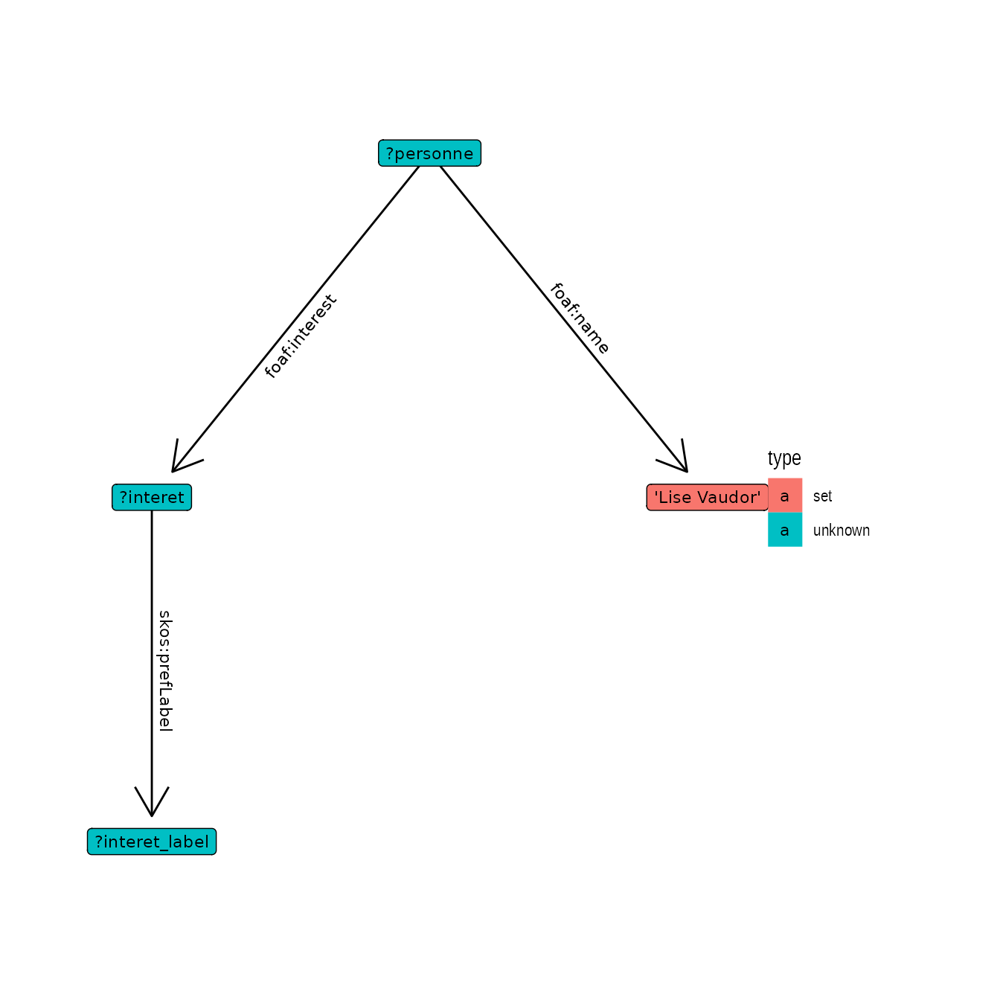
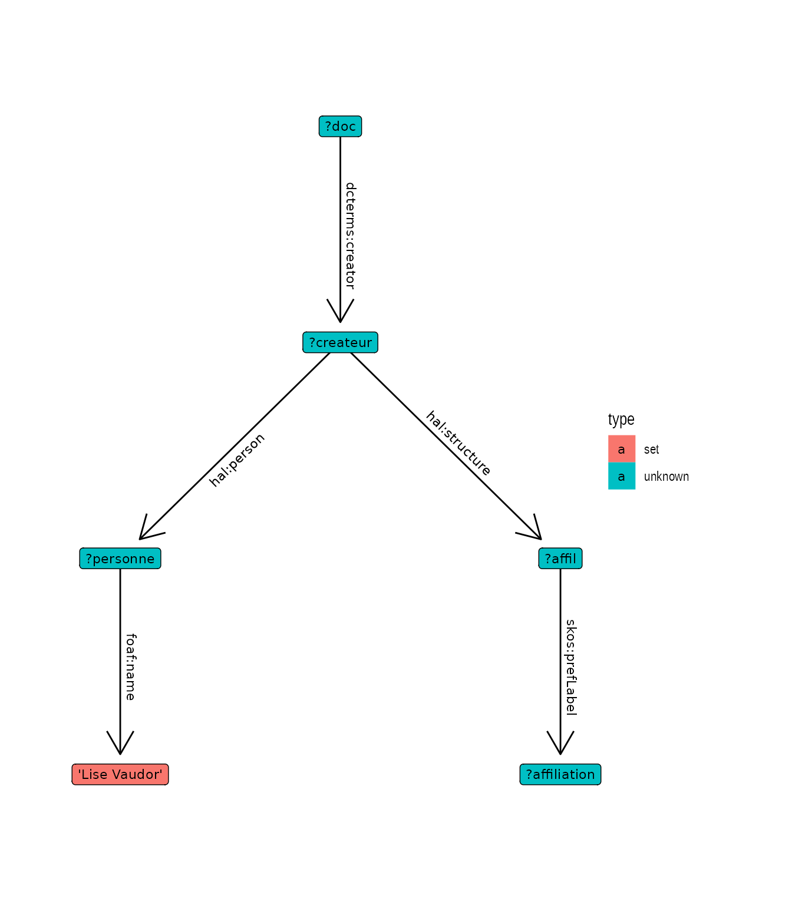
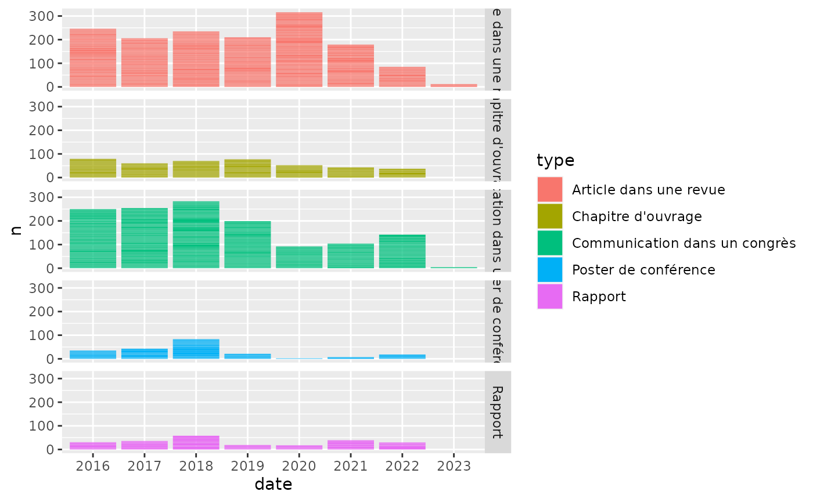

glitter for HAL (en français)
Lise Vaudor
Source:vignettes/articles/glitter_bibliometry.Rmd
glitter_bibliometry.RmdThis article deals with queries on the HAL (for “Hyper Article en Ligne”) triplestore, dataHAL. HAL is the bibliograpic open archive chosen by French research institutions, universities, and grandes écoles. Hence, we suppose this article will only be useful to French-speaking R users and will provide it in French from now on…
Les données contenues dans le triplestore HAL sont a priori utilisables pour générer des rapports bibliographiques pour une personne, une organisation (UMR par exemple), en triant par exemple par année ou par période.
On peut ainsi imaginer utiliser ces données pour générer automatiquement et de manière reproductible un certain nombre de tables ou graphiques en lien avec les évaluations du personnel publiant des établissements de recherche.
Dans la suite de cet article je montrerai comment explorer et exploiter ces données à l’aide de R, et (notamment) du paquet glitter (pour créer et réaliser les requêtes) et du paquet sequins (pour visualiser les requêtes).
Entrée par auteur·rice
Essayons par exemple d’examiner s’il existe dans la base quelqu’un qui s’appelle (tout à fait au hasard) “Lise Vaudor”:
test_LV=spq_init("hal") %>%
spq_add("?personne foaf:name 'Lise Vaudor'") %>% # récupère les personnes appelées "Lise Vaudor"
spq_perform()
DT::datatable(test_LV)Il existe bien une personne ayant ce nom dans la base de données, qui fait l’objet d’une fiche consultable.
La consultation de cette page montre que deux propriétés sont souvent renseignées: foaf:interest et foaf:topic_interest. Cette dernière propriété semble regrouper des mots-clés issus de l’ensemble des publications de l’auteur alors que foaf:interest correspond à des centres d’intérêt déclarés (probablement lors de la création du profil HAL: à vrai dire je ne m’en souviens plus!).
Quoi qu’il en soit, l’information relative aux centres d’intérêt est accessible comme suit:
requete = spq_init("hal") %>%
spq_add("?personne foaf:name 'Lise Vaudor'") %>%
spq_add("?personne foaf:interest ?interet") %>% # récupère les centres d'intérêt
spq_add("?interet skos:prefLabel ?interet_label") %>% # étiquette les centres d'intérêt
spq_filter(lang(interet_label) == 'fr')
sequins::graph_query(requete, layout = "tree")
interet_LV = requete %>% # garde seulement les étiquettes en français
spq_perform()
DT::datatable(interet_LV)Documents d’un·e auteur·rice
Une des petites subtilités du modèle de données HAL consiste à considérer que un document a un créateur·rice – ou auteur·rice – et un·e créateur·rice correspond à une personne.
Affiliations
Par exemple, l’article “How sampling influences the statistical power to detect changes in abundance: an application to river restoration” a pour créatrice (entre autres personnes) “Lise Vaudor à l’époque du Cemagref”, qui correspond à la personne “Lise Vaudor” qui elle est intemporelle 😉.
Ainsi, c’est en considérant les créateurs de documents que l’on va récupérer les affiliations: l’affiliation est une information qui se récupère en adoptant une entrée par document plutôt que par auteur·rice.
requete = spq_init("hal") %>%
spq_add("?doc dcterms:creator ?createur") %>% # documents crées par créateur
spq_add("?createur hal:structure ?affil") %>% # créateur correspond à une affiliation
spq_add("?createur hal:person ?personne") %>% # créateur correspond à une personne
spq_add("?personne foaf:name 'Lise Vaudor'") %>%
spq_add("?affil skos:prefLabel ?affiliation") %>% # étiquette affiliation
spq_group_by(affiliation) %>% # groupe par affiliation
spq_summarise(n = n()) %>%
spq_arrange(desc(n))
requete## PREFIX foaf: <http://xmlns.com/foaf/0.1/>
## PREFIX dcterms: <http://purl.org/dc/terms/>
## PREFIX skos: <http://www.w3.org/2004/02/skos/core#>
## PREFIX hal: <http://data.archives-ouvertes.fr/schema/>
## SELECT ?affiliation (COUNT(*) AS ?n)
## WHERE {
##
## ?doc dcterms:creator ?createur.
## ?createur hal:structure ?affil.
## ?createur hal:person ?personne.
## ?personne foaf:name 'Lise Vaudor'.
## ?affil skos:prefLabel ?affiliation.
##
## }
## GROUP BY ?affiliation
## ORDER BY DESC(?n)
sequins::graph_query(requete, layout="tree")
orga_LV = requete %>% # renvoie le nombre d'enregistrements
spq_perform()
DT::datatable(orga_LV) Documents
Si l’on ne s’intéresse pas aux affiliations mais aux documents eux-mêmes:
docs_LV = spq_init(endpoint = "hal") %>%
spq_add("?doc dcterms:creator ?createur") %>%
spq_add("?createur hal:structure ?affil") %>%
spq_add("?createur hal:person ?personne") %>%
spq_add("?personne foaf:name 'Lise Vaudor'") %>%
spq_add("?affil skos:prefLabel ?affiliation") %>%
spq_add("?doc dcterms:type ?type") %>%
spq_add("?type skos:prefLabel ?type_label") %>%
spq_filter(lang(type_label) == 'fr') %>%
spq_add("?doc dcterms:bibliographicCitation ?citation") %>%
spq_add("?doc dcterms:issued ?date") %>%
spq_mutate(date = str_sub(as.character(date), 1, 4)) %>%
spq_group_by(citation, type_label, date) %>%
spq_summarise(affiliation = str_c(affiliation, sep = ", ")) %>%
spq_perform()
docs_LV## # A tibble: 104 × 4
## citation date type_label affiliation
## <chr> <chr> <chr> <chr>
## 1 "Lise Vaudor, E. Parrot, Hervé Piégay. Describi… 2013 Poster de… Plateforme…
## 2 "Lise Vaudor, Sébastien Rey-Coyrehourcq, Fabien… 2018 Note de l… Environnem…
## 3 "Lise Vaudor, Hervé Piégay, Vincent Wawrzyniak,… 2016 Communica… Environnem…
## 4 "Véronique Benacchio, Hervé Piégay, Thomas Buff… 2017 Article d… Environnem…
## 5 "V. Benacchio, Hervé Piégay, Thomas Buffin-Bela… 2014 Communica… Environnem…
## 6 "Thomas Buhler, Emeline Comby, Lise Vaudor, Thi… 2021 Article d… Environnem…
## 7 "Matthieu Adam, Marylise Cottet, Sylvie Morarde… 2020 Article d… Environnem…
## 8 "Bastien Bonef, Lionel Gérard, Jean-Luc Rouvièr… 2015 Article d… Nanophysiq…
## 9 "Hervé Piégay, Fanny Arnaud, Cassel Mathieu, Th… 2016 Article d… Environnem…
## 10 "Jérémie Riquier, Hervé Piégay, Nicolas Lamouro… 2016 Communica… Environnem…
## # ℹ 94 more rowsCette requête renvoie une table comptant 104. Voici les 20 documents les plus récents:
Entrée par laboratoire
Identification du laboratoire
Intéressons-nous maintenant aux publications issues d’un laboratoire. Ici, nous avons choisi le laboratoire “Environnement Ville Société”, alias “EVS” ou encore “UMR 5600”.
Essayons de le retrouver dans la base de données:
labo_EVS = spq_init(endpoint = "hal") %>%
spq_add("?labo skos:prefLabel ?labo_label") %>%
spq_add("?labo dcterms:identifier ?labo_id", .required = FALSE) %>%
spq_filter(str_detect(labo_label,"EVS|(UMR 5600)|(Environnement Ville Soc)")) %>%
spq_perform()
labo_EVS## # A tibble: 21 × 3
## labo labo_label labo_id
## <chr> <chr> <chr>
## 1 https://data.archives-ouvertes.fr/revue/36364 REVSTAT - Statist… NA
## 2 https://data.archives-ouvertes.fr/revue/115361 Issue 4 of SCS Tr… NA
## 3 https://data.archives-ouvertes.fr/structure/54063 GEVSM NA
## 4 https://data.archives-ouvertes.fr/structure/145345 Environnement Vil… UMR5600
## 5 https://data.archives-ouvertes.fr/structure/390864 UMR 5600 EVS NA
## 6 https://data.archives-ouvertes.fr/structure/458855 Plateforme ISIG. … NA
## 7 https://data.archives-ouvertes.fr/structure/493368 Environnement Vil… NA
## 8 https://data.archives-ouvertes.fr/structure/516259 UMR CNRS 5600 EVS… NA
## 9 https://data.archives-ouvertes.fr/structure/516301 Environnement Vil… NA
## 10 https://data.archives-ouvertes.fr/structure/520344 EVS-LAURE UMR 56…
## # ℹ 11 more rowsBon! Eh bien, étant donné la diversité des formats dans la dénomination d’EVS, un petit tri manuel s’impose.
labo_EVS = labo_EVS %>%
unique() %>%
mutate(num = 1:n()) %>%
filter(!(num %in% c(1,2,3,18))) %>% # ici je retire les labos qui ne correspondent pas à UMR 5600 / EVS
select(-num)
DT::datatable(labo_EVS)Créons maintenant une fonction qui permet de récupérer l’ensemble des documents pour chacune de ces dénominations de laboratoire.
get_docs_lab = function(lab){
lab = paste0("<",lab,">")
result = spq_init(endpoint = "hal") %>%
spq_add(glue::glue("?createur hal:structure {lab}")) %>%
spq_add("?createur hal:person ?personne") %>%
spq_add("?personne foaf:name ?auteur") %>%
spq_add("?doc dcterms:creator ?createur") %>%
spq_select(-createur) %>%
spq_add("?doc dcterms:type ?type") %>% # récupère le type de document
spq_add("?type skos:prefLabel ?type_label") %>% # étiquette le type de document
spq_filter(lang(type_label) == 'fr') %>% # ... en français
spq_add("?doc dcterms:bibliographicCitation ?citation") %>% # récupère la citation
spq_add("?doc dcterms:issued ?date") %>%
spq_perform() %>%
mutate(date = stringr::str_sub(date,1,4)) %>%
select(auteur, type = type_label, date, citation)
return(result)
}Appliquons maintenant cette fonction à chacune des dénominations possibles pour le labo EVS:
docs_EVS = labo_EVS %>%
group_by(labo, labo_label) %>%
tidyr::nest() %>%
mutate(data = purrr::map(labo, get_docs_lab)) %>%
tidyr::unnest(cols="data")
dim(docs_EVS)## [1] 8815 6Cette table compte de nombreux enregistrements (8815). On montre ci-dessous les plus récents (à partir de 2020):
docs_EVS_show = docs_EVS %>%
select(-labo) %>%
filter(date >= 2020) %>%
unique() %>%
select(auteur, date, type, citation, citation) %>%
ungroup()## Adding missing grouping variables: `labo`
## Adding missing grouping variables: `labo`, `labo_label`
dim(docs_EVS_show) ## [1] 1299 6
DT::datatable(docs_EVS_show) Rendus graphiques
On peut dès lors utiliser ces données pour produire un certain nombre de graphiques permettant d’apprécier la production du laboratoire au cours du temps:
docs_datecitation = docs_EVS %>%
group_by(type) %>%
mutate(ntype = n()) %>%
ungroup() %>%
mutate(ntot = n()) %>%
mutate(proptype = ntype/ntot) %>%
filter(proptype > 0.05) %>%
group_by(date, citation, type) %>%
summarise(n = n()) %>%
filter(date > 2015)## `summarise()` has grouped output by 'date', 'citation'. You can override using
## the `.groups` argument.
ggplot(docs_datecitation, aes(x = date, y = n, fill = type)) +
geom_bar(stat = "identity") +
facet_grid(rows = vars(type))
Il ne s’agit là que d’un exemple (parmi beaucoup d’autres possibilités comme l’exploitation de mots clés, de statistiques par journal, de réseaux d’auteurs) pour exploiter ces données. Nanmoins ces méthodes allant au-delà du “scope” du package glitter nous n’irons pas plus loin en terme d’analyse des résultats des requêtes dans ce document.